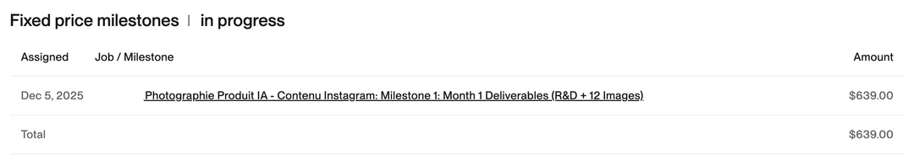
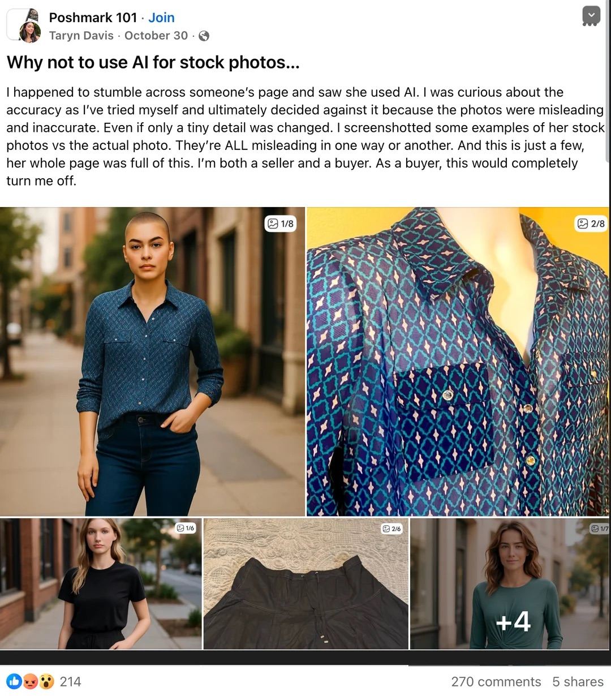
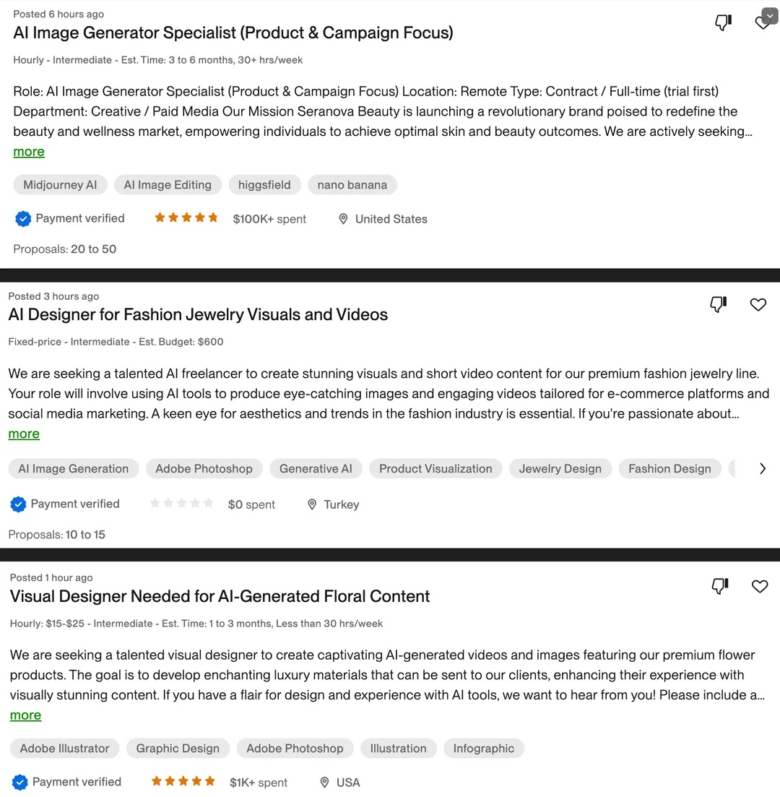
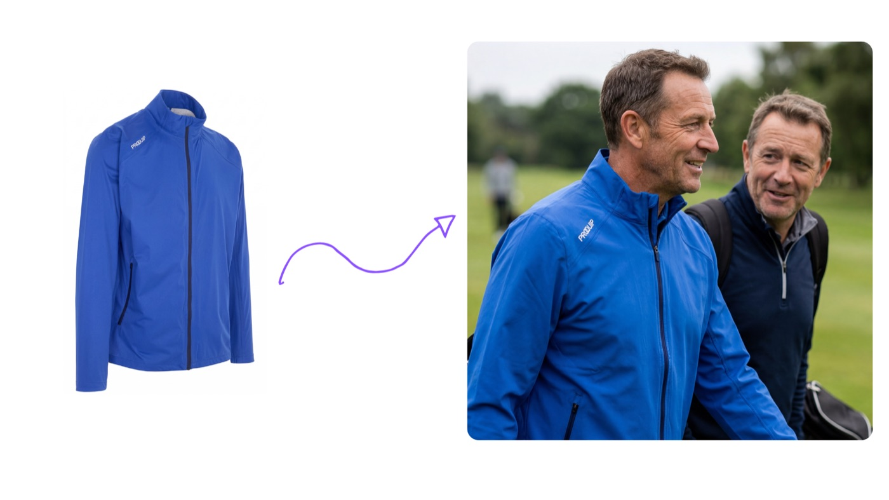
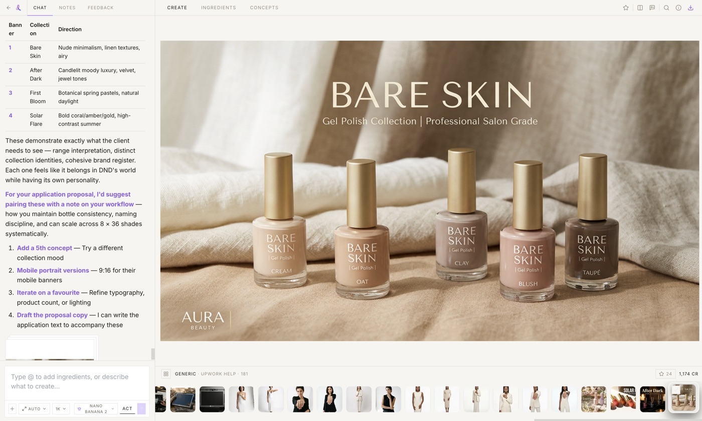
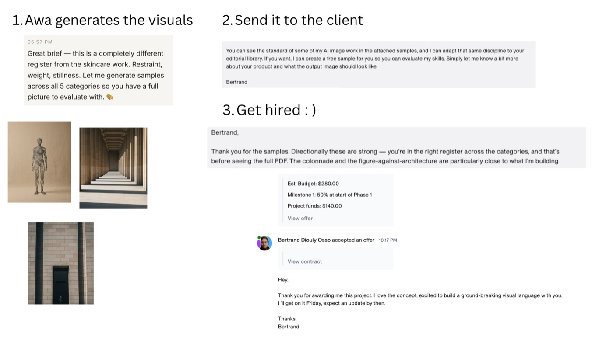

The Proof Before Pitch method for landing your first AI photography client.
Find · Create · Send
Let me start with real numbers.
Right now, one single client pays me $639/month for 12 AI-generated images.
That's $7,668 per year. From ONE client.
That's $53.25 per AI-generated image.
I repeat: $53 per AI generated image.

That's crazy. Because right now, most people think AI images are slop.
Let me tell you something: if you know what you do, it's not.
And here's the part that matters for you:
I started with a brand-new Upwork account. No history. No reviews. No portfolio. I hadn't sold a service to anyone since 2009, when I was a student doing web design in Manchester.
I had no sales skills. I still don't, really.
So how did I land that client?
Not with a portfolio. Not with a pitch. Not with "10 tips to write better proposals."
I used something I call Proof Before Pitch.
Here's the core idea:
Portfolios and sales skills exist for one reason — to make a stranger trust you BEFORE you do the work.
Proof Before Pitch skips all of that. You do the work first. You create a sample visual for the client's actual product, in their actual style, before they pay you anything.
When they open your message, they don't have to imagine anything. They don't have to click a portfolio link and hope you "get" their brand. They SEE their product, done right.
The sample IS the sales conversation.
That's it. That's the method. The rest of this guide shows you exactly how to run it.
Small businesses selling physical products online (e-com stores on Shopify, Amazon, WordPress) live and die by two things:
Until recently, the only way to get great visuals was studio photography. Expensive, slow, a ton of organisation. So most small businesses just made do with basic product pics.
Now AI can take a boring iPhone photo of a product and turn it into lifestyle photography. More engagement, higher conversions, more sales. Every smart e-com business knows this by now.
So you might be wondering...
Believe me, most try.
I was chatting with a client the other day. He owns a toy company. He's a marketer. He knows how to use AI image tools.
He still paid me $100 for a couple images.
Why? Because when he used a sloppy AI image that embellished his product, a customer left him a 2-star review on TrustPilot. "Item not as pictured."

In e-commerce, "close enough" is a refund.
Here's what actually matters in AI photography, and why most business owners fail at it:
Getting all three right is a skill. And skills get paid.
So when the e-com owner tries it himself with Gemini, ChatGPT, Midjourney... and inevitably fails... guess where he goes?
Upwork. To ask for help. Every single day, dozens of them.
That's where you come in.
One honest warning before we start: this is not for everybody. You need a bit of creative fibre in you. If you've done graphic design, web design, photography, content — you'll love this. If not, this might not be fun for you. This is not for accountants lol.
The Plan
Let's go.
Forget cold outreach for now. Forget DMing strangers who've never thought about AI photography.
We start on Upwork, for one simple reason:
On Upwork, the clients are already looking for you.
They've already posted a job. They already know they have a problem. They already have a payment method connected. These are not cold leads. These are problem-aware clients with their hand up.
Most of them are exactly the failed-DIY business owners from the intro. They tried ChatGPT. They got slop. Now they're paying for help.
Open Upwork and search these keywords:
→ Or click here to open this exact search on Upwork
You will see posts from e-com business owners who need product visuals, lifestyle images, models holding their products, ad creatives, Amazon listing images.

There are dozens of these every day. At least one per hour. No single freelancer can take all these clients.
A good job post gives you at least these details:
A great job post (these are rarer) will give you:
Example of a good one:
"We need AI lifestyle images for a skincare product with a realistic model in a clean bathroom setting."
That's more than enough. We can work with that.
A bad one says "I need pretty AI images" with no details. Skip those for now (or apply and ask for details — more on that in Step 3).
Apply to jobs posted TODAY. Ideally within the last few hours. Less competition, the client is still active, and you get in before dozens of other freelancers.
✓ Your 15-minute action
Open Upwork right now. Set up an account if you haven't got one and run the searches above. Find 3 recent job posts that fit the "good enough" description above. Save them.
That's it. Don't apply yet. Just find them.
This is the heart of Proof Before Pitch.
Select ONE of the 3 jobs you saved, and we're going to create a sample visual of THEIR product before you ever talk to them.
Every sample is built from 3 ingredients, and you pull all of them straight from the job post:
Now feed those into the AI and create the sample.
If all you have is "we're a sportswear brand and we want sportswear lifestyle visuals" — that's more than enough. You create exactly that: a realistic athlete, in motion, in a setting that matches the brand's level. The client looks at it and thinks: "That's exactly what we meant."
And on the rare job where they DID share their brand and product images? Jackpot. Now the sample shows THEIR actual product in THEIR actual style, and the reaction becomes: "That's MY product. How did they do that?"
Either way, that's the wow moment. That's what no portfolio link can do.
Before you send anything, remember the triad from the intro. Your sample must pass all three:
If your image fails any of these, it's slop, and slop gets ignored (or worse, remembered).

You can do this with any AI image tool. Gemini, ChatGPT, Fal — whatever wrapper you like. The method doesn't depend on the tool.
But I'll be honest: doing it manually means juggling brand research, prompt writing, product prep, and a lot of trial and error. I got tired of that workflow, so I built it into a tool.
It's called Dezygn, and it has an agent (her name is Awa) that runs this exact workflow:

What takes an hour manually takes about 10-15 minutes this way.
This is exactly how I won this job below:

Think about it: 99% of applications in jobs never include a sample. If you are the one that does, you stand apart.
"While 40 Freelancers Beg for the Job, One Quietly Hands Over the Finished Work."
✓ Your 30-minute action
One rule: don't spend more than 10 minutes per sample. This is a numbers game, not a perfection game. Good enough to wow beats perfect-but-never-sent.
Now the part everyone overthinks: the application.
Here's the thing. You're not going to sell anything. The image does the selling. Your message just delivers it.
Keep it stupidly short. Something like:
Hi [name],
I read your post about needing [what they asked for] for your [product type] brand.
Instead of sending you a portfolio, I went ahead and created a sample of exactly that and attached it.
If the direction feels right, send me your product photos and I'll create one with YOUR actual product, free. Then if you like it, we take it from there.
[Your name]
(And on the rare job where they did share their product images? Even better — your attached sample already shows their actual product, and the free-sample line becomes "tell me what to change and I'll send another version.")
That's it. No "I'm a passionate creative professional with 10 years of experience." No bullet list of skills. The sample is attached. The sample does the talking.
If the post doesn't even tell you the product type (rare, but it happens), use this instead:
Hi [name],
I can help with this. Want me to create a free sample for your product first, so you can judge my work on YOUR product instead of a portfolio?
Just send me a product photo and your website and I'll have something for you within a day.
"Want me to create a free sample for you?" gets an insanely high response rate. Because who says no to free?
Collect their brief, create the image in Dezygn, send it. From there the conversation is about scope and price, not about whether you're good enough. The sample already settled that.
Here's how this compounds:
This is exactly how I started, and it's the same strategy I use till this day. And once you have one client and one testimonial, the second is 10x easier. The third is basically automatic. It snowballs.
✓ Your action
Send your sample to the job from Step 2. Then apply to your other 2 saved jobs (create samples if they have details, offer a free sample if they don't).
Three applications out the door. You're no longer thinking about doing this. You're doing it.
True story.
Early on, I created an outreach sample for a prospect. Nice image. Good composition. Brand colors on point.
One problem.
The model in the image had six fingers.
SIX. FINGERS.
I was excited, I didn't check, I hit send. Never heard back. Obviously.
That's when I built the Quality Gate. Now every single image goes through this checklist before it leaves my desktop:
The Quality Gate
It takes 10-15 minutes. That's nothing compared to the cost of sending a six-fingered image to a potential $500/month client.
Learn from my mistake lol.
One more thing.
After you've run this method on Upwork a few times, you'll notice something:
Nothing about Proof Before Pitch is Upwork-specific.
Upwork is just where the problem-aware clients raise their hands. But for every brand posting a job there, thousands of e-com brands never will. They're on Instagram, TikTok, running Shopify stores, buying ads — and quietly settling for mediocre visuals.
You can reach them with the exact same method. Except this time, YOU pick the brand:
Hi [name],
I came across [brand] on Instagram and loved [specific product]. I create AI lifestyle photography for e-com brands, and instead of explaining it, I made a sample with your actual product — it's right below.
[IMAGE EMBEDDED IN THE EMAIL — not a link, not an attachment they have to open]
If you'd like more in this direction, happy to create a few options. No charge for the first ones.
[Your name]
The image must be IN the email, visible the second they open it. The moment they have to click something, you've lost half of them.
Why does this work when normal cold email gets ignored? Because every other cold email asks the brand to do work — click a portfolio, book a call, imagine the result. Yours does the opposite. They open it and their own product is staring back at them, looking better than anything on their site.
Text-only cold emails get a 2% response rate on a good day. Personalized visuals change the math completely.
Doing this one brand at a time is exactly how I'd start. And when you're ready to do it at scale, this workflow — find brands, analyze them, prep personalized visuals in batches — is built into Dezygn as the Outreach Factory.
One channel where clients come to you (Upwork). One channel where you go to them (email). Same method. That's a complete client acquisition system.
Quick recap of the whole method:
No portfolio needed. No sales skills needed. The proof comes before the pitch.
The opportunity is real, the demand is daily, and the competition is still low — because most people send text-only proposals and portfolio links, and those get deleted.
Don't be most people.
Your move today: one brand, one hour, one email. That's the whole assignment.
If you have questions, just reply to the email this came with. I read everything.
Let's go land some clients.
Bertrand
P.S. — You now know more about getting AI photography clients than 95% of the people fighting over $5 logo gigs. The method only works if you run it. Remember: The Job Goes to Whoever Shows Up With the Work Already Done.